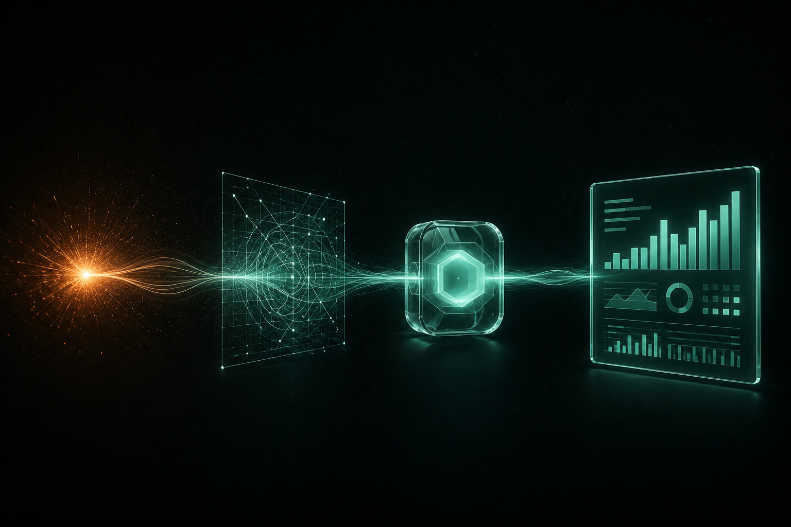

Мы понимаем, почему вы не верите маркетологам. Поэтому строим работу так, чтобы вам не нужно было верить: вы видите цифры сами.
Сначала бесплатный аудит, потом одна связка на небольшом бюджете. Проверяем гипотезу дёшево, прежде чем предлагать вам вложить больше.
Не раз в месяц в презентации, а с первого дня на дашборде. Сколько стоил клиент, вы видите в реальном времени.
У каждого этапа есть заранее заданная точка стоп. Не сработало за срок, мы говорим об этом прямо, а не тянем из вас деньги, пока «докручиваем».
Вы не привязаны. Не устраивают цифры, расходимся. Связки, доступы и данные остаются у вас.
Не можем показать, откуда взяли число, не пишем его. Ни на сайте, ни в отчёте вам.
Нейросети мы используем внутри, чтобы работать быстрее. Но за стратегию и ваши деньги отвечает человек, а не бот.
Мы как элемент в реакции: добавляемся малой дозой в нужную точку и запускаем рост. Не гора работ, а нужный шаг в нужном месте.

AI-аудит за 15 минут показывает, на каком шаге вы теряете заявки и деньги.
Берём связку, которая закроет вашу главную потерю, и запускаем на малом бюджете.
Дашборд Пульс показывает заявки, их цену и выручку. Решения принимаете по цифрам, а не по ощущениям.
Усиливаем сработавшее, отключаем лишнее. Спокойно, по данным, без резких трат.
Первый шаг бесплатный и ни к чему не обязывает. Посмотрите, как мы разбираем ваш маркетинг, и решите сами.
Получить бесплатный аудит →